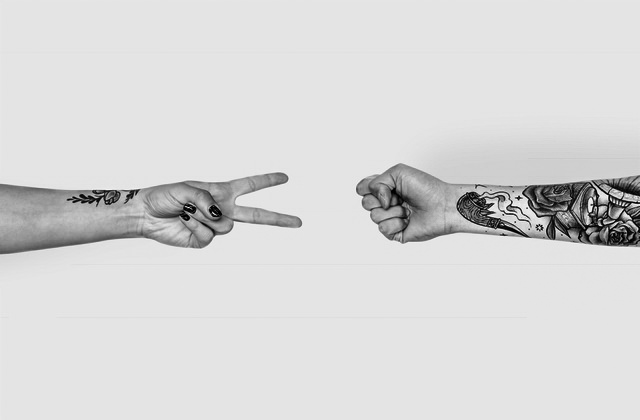

Przez ostatnie 10 lat zajmowałam się m.in. zarządzaniem stronami internetowymi za pomocą CMS-ów. Tworzyłam
treść, dopasowywałam układ, szukałam rozwiązań. Jednocześnie uwielbiam pracę z obrazem: grafiką, zdjęciami,
filmem, ale i tekstem – wychwytywanie literówek ćwiczę regularnie, zajmując się korektą. Lubię
też wiedzieć, jak coś działa albo dlaczego działa właśnie tak.
Pasje i doświadczenie połączyłam w web developingu.
Od roku uczę się samodzielnie programowania: od podstaw HTML i CSS, przez Javę Script, po technologie
backendowe. Tworzę projekty w ramach ćwiczeń, pracuję też nad stronami komercyjnie – przygotowałam dwie
petycje dla organizacji Anima International, modyfikowałam szablony na WordPressie, PrestaShop i Shopperze.
W wolnych chwilach piszę o podróżach i dopracowuję stronę mojego bloga.
Projekty
Petycja
Strona stworzona z zespołem programistów; oparta na Vue.js i pug.
Blog
Strona oparta na WordPressie, zbudowana z wykorzystaniem page buildera Elementor.
PSD to HTML
Strona stworzona na podstawie dostarczonego layoutu.
ECMC
Przykładowa strona dla wydarzenia, stworzona z wykorzystaniem Bootstrap4.
Modyfikacje szablonów
Modyfikacje szablonów (tutaj przykład z Shoppera, ale także PrestaShop i WordPress).

Gra
Gra Kamień, papier, nożyczki stworzona z wykorzystaniem obiektów w JS.
Slajder
Slajder – zmiana zdjęć po kliknięciu przycisku albo strzałek plus pokaz
slajdów.
Perkusja
Symulacja gry na perksuji, stworzona w JS z przypisaniem dźwięków do klawiszy.